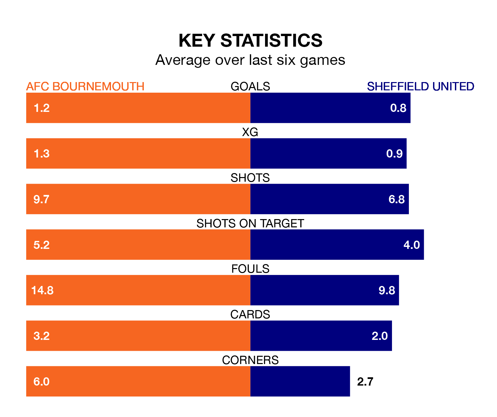

Sheffield United make the journey to the Vitality Stadium to play AFC Bournemouth on Saturday looking to pick up points to end their three-game losing streak.
United's struggles have left them with just three points from their last six Premier League matches, while their opponents have earned six from a possible 18.
United are bottom of the table after 27 games, of which they have won three and drawn four, earning 13 points.
Bournemouth are six places ahead of the Blades in 14th, with eight wins and seven draws putting them on 31 points.
In Dominic Solanke, the Cherries have one of the league's most on-form strikers so far this season. He has notched 14 goals in 26 appearances, to sit fourth in the scoring charts.
His goal rate of one every 166 minutes is quicker than that of Oliver McBurnie, the away side's top scorer with a goal every 210 minutes, and a total of four goals in 15 games.
In the last five years, Bournemouth and United have played each other on five occasions. Bournemouth won two of them, United one, and they drew twice.
On average, the Cherries scored 1.4 goals and the Blades 1.0 in those matches.
Their last meeting was on November 25, when Bournemouth won 3-1 away.
With 22 goals in 27 games so far this season, United are the league's lowest scorers with 0.8 goals per game. And they are conceding more than average, letting in 72 goals at a rate of 2.7 per game.
The hosts are also below average scorers, with 1.3 goals per game, compared to a league average of 1.6. They have conceded 1.8 goals per game.
Bournemouth's last match was on Sunday, a 2-0 win against Burnley, with Antoine Semenyo and Justin Kluivert getting the goals for the Cherries.
United lost 6-0 against Arsenal last time out, on Monday.
Saturday's match will be refereed by Anthony Taylor, who has taken charge of 19 Premier League games so far this season, issuing three red cards and booking 95 players. He has awarded 10 penalties.
The last United game Taylor refereed was the 1-1 draw away at Aston Villa on December 22. He is yet to oversee a match featuring Bournemouth this season.
Updated: 09:34 (UTC), 08/03/24